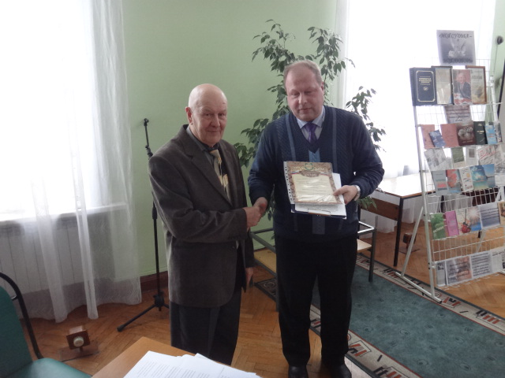
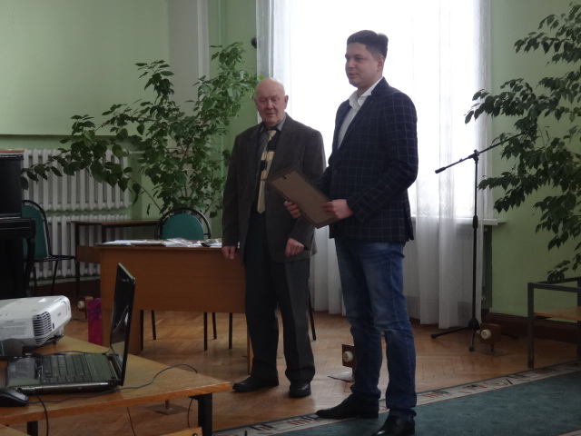
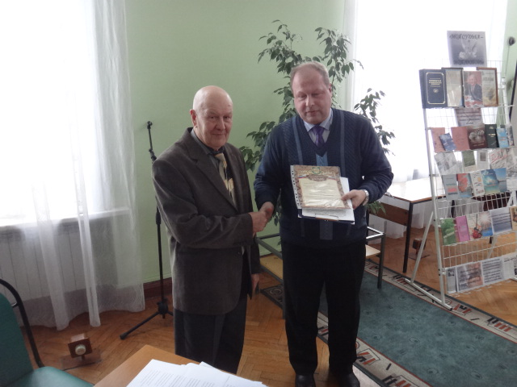
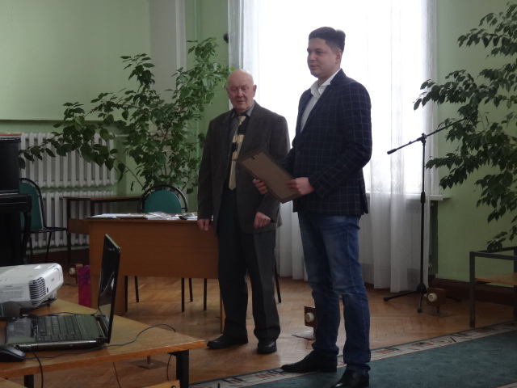
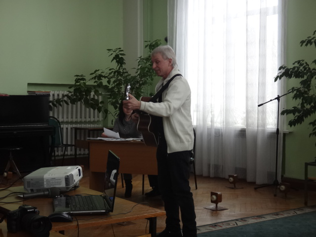
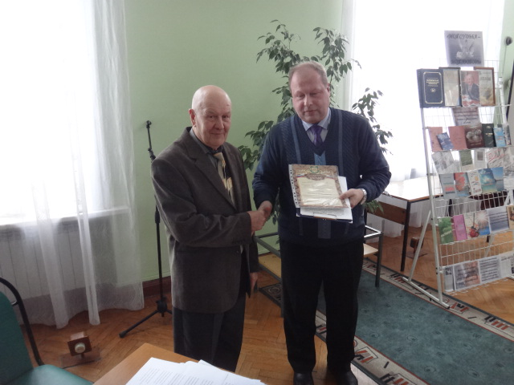
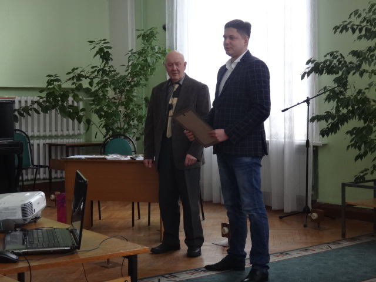

4 марта 2018 г. в 1300 в Воронежской областной универсальной научной библиотеке имени И.С. Никитина (ауд. 301) состоялась презентация поэтического сборника «Моя судьба – моя любовь» воронежского поэта, члена союза писателей «Воинское содружество», руководителя поэтического клуба детей и юношества «Левобережье» Михаила Николаевича Соловьёва. В новый сборник поэта, а это уже пятнадцатый сборник, вошли стихи о самом главном чувстве – любви… Верной любви, пронесённой через всю жизнь к своей дорогой и единственной избраннице супруге. На презентации были члены союза писателей «Воинское содружество»: Батраченко В.С., Загорская М.М., Кашкин С.Н.

С поздравительной речью, благодарностью от правления и позитивной рецензией поэтического сборника «Моя судьба – моя любовь» выступил Кашкин Сергей Николаевич председатель правления Воронежской городской общественной организации «Союз писателей «Воинское содружество».
Со стихами из сборника, помимо автора, выступили члены клуба «Левобережье», а также Сергей Олейник, написавший песни под гитару на стихи Михаила Соловьёва. В завершении презентации с благодарственными словами и поздравлением от Управления Культуры г. Воронежа выступил Андрей Васильевич Харитонов, руководитель управления культуры администрации городского округа город Воронеж.


